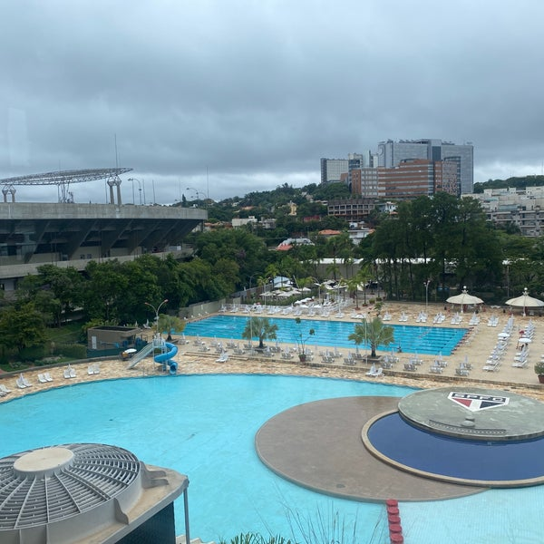
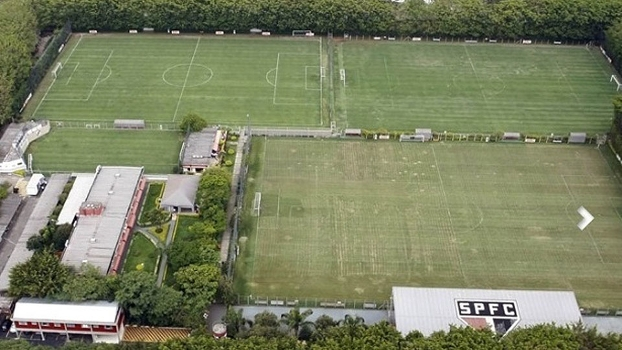
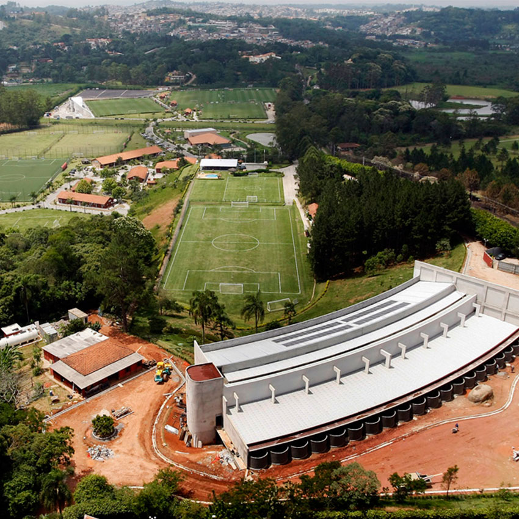

Bem vindo ao Portal da Transparência!
Torcida
Torcida que Conduz!
Segundo a última estimativa realizada em 06/2022, o São Paulo possui 17,49 milhões de torcedores. Essa é a nossa torcida que conduz. Juntos fazemos o clube da fé mais forte!
Seja um Sócio Torcedor e ajude nosso Tricolor!
Atualmente somos 36483 sócios torcedores, isso é apenas uma taxa de 0,2% do montante total de torcedores.
Venha se associar e ajude nosso tricolor a ser mais forte. Torça, apoie, se torne um sócio torcedor.
Conheça nossos planos e benefícios, basta clicar no link: Clique Aqui
Nossa Torcida que conduz tem mostrado toda a sua força.
| # | Primeiro | Último | Nickname |
|---|---|---|---|
| 1 | Mark | Otto | @mdo |
| 2 | Jacob | Thornton | @fat |
| 3 | Larry the Bird | ||
Patrocinadores
Sportsbet.io
Valor: R$ 24 milhões anualmente.
Adidas
Valor: R$ 15 milhões anualmente.
Bitso
Valor: R$ 13,5 milhões anualmente.
ABC da Construção
Valor: R$ 1 milhão anualmente.
Konami
Valor: R$ 1 milhão anualmente.
Socios.com
Emissão de fan tokens do clube, com direito a 50% da renda.
Infraestrutura
A infraestrutura do São Paulo Futebol Clube conta com o Estádio Cícero Pompeu de Toledo (Morumbi) e clube social no bairro do Morumbi que ocupam uma área de 150 mil m², com valor de mercado estimado em R$ 585 milhões de reais; conta também com um CT na Barra Funda com 45 mil m² e valor estimado em R$ 147 milhões de reais; Além do CT em Cotia com 220 mil m² e valor de mercado de R$ 65 milhões de reais, totalizando um valor de patrimônio em R$ 797 milhões de reais.

Estádio do Morumbi
Maior estádio particular do Brasil, o Estádio Cícero Pompeu de Toledo, o Morumbi, é a casa do São Paulo FC e palco de muitos dos principais eventos esportivos e de entretenimento do continente.

Clube Social do Morumbi
Desde sua inauguração, o Complexo Social mudou e cresceu, constantemente em melhorias. Projetos foram alterados, novas instalações foram construídas (em destaque as piscinas e quadras do Ginásio IV e os campos de futebol social). Em honra e memória do grande são-paulino, o complexo foi batizado com o nome de “Manoel Raymundo Paes de Almeida”.

CT da Barra Funda
O CT da Barra Funda, como é popularmente conhecido, é o local onde o esquadrão tricolor realiza suas pré-temporadas e treinamentos técnicos, táticos e físicos. É lá também que a equipe são-paulina se concentra para as partidas, e onde moram alguns atletas de fora da cidade que escolhem residir no clube. Está localizado na região central de São Paulo. Ainda assim, o terreno de 44.472 m² é amplo e arborizado, além de contar com estrutura de primeira linha para que os atletas e demais profissionais realizem seus trabalhos.

CT de Cotia
Erguido em um amplo terreno de 230 mil metros quadrados, o centro é referência internacional no trabalho de formação de atletas de alto rendimento. Localizado em Cotia, a cerca de 30 quilômetros da capital paulista, o CFA conta com excelente estrutura esportiva, educacional e administrativa. As modernas instalações aproveitam a natureza e geografia do terreno, criando um ambiente altamente funcional e de extremo conforto e tranquilidade.
Financeiro
Atualmente a instituição São Paulo Futebol Clube possui 981 funcionários e tem valor de mercado estimado em R$ 2.214 bilhões de reais, segundo a Sports Value.
Receita
A receita acumulada pelo São Paulo no Ano de 2022 segundo o balanço anual foi de R$ 660,5 milhões de reais.
São Paulo Futebol Clube
Custos
Em 2022, o São Paulo gastou R$ 81 milhões de reais em reforços, além de um custo mensal estimado para manter a infraestutura e parte administrativa de R$ 622.961 reais.
São Paulo Futebol Clube
Título do card
Nos ano de 2021 e 2022, o São Paulo realizou de forma acumulada R$ 60 milhões de reais investidos na formação de jogadores nas categorias de base.
São Paulo Futebol Clube